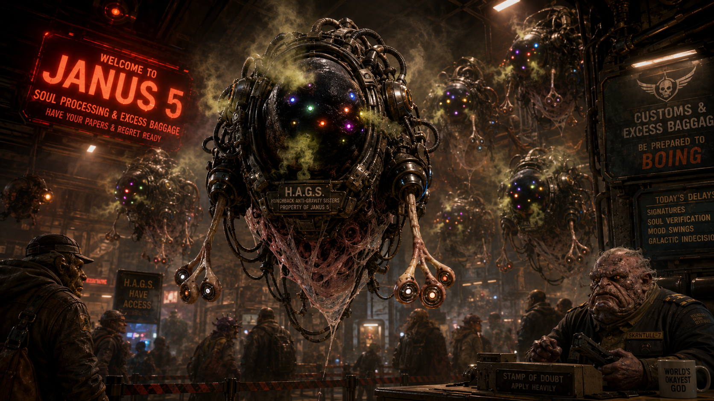
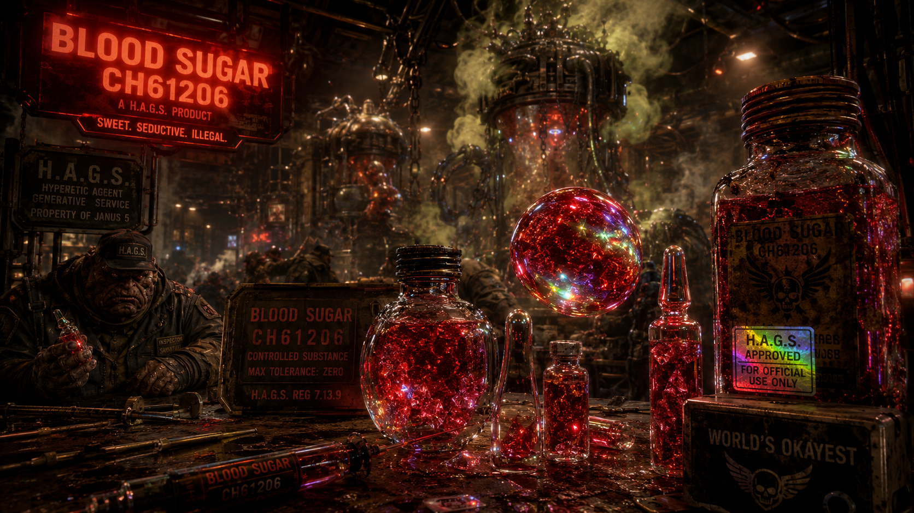
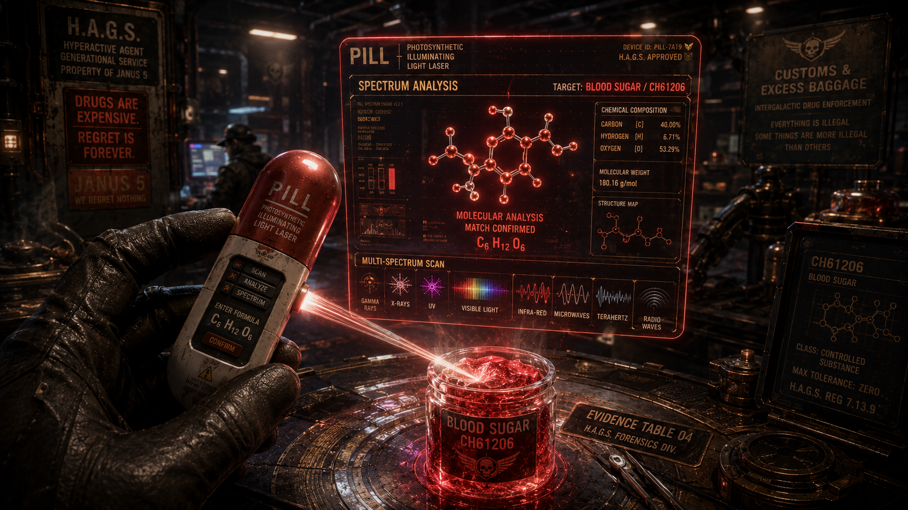
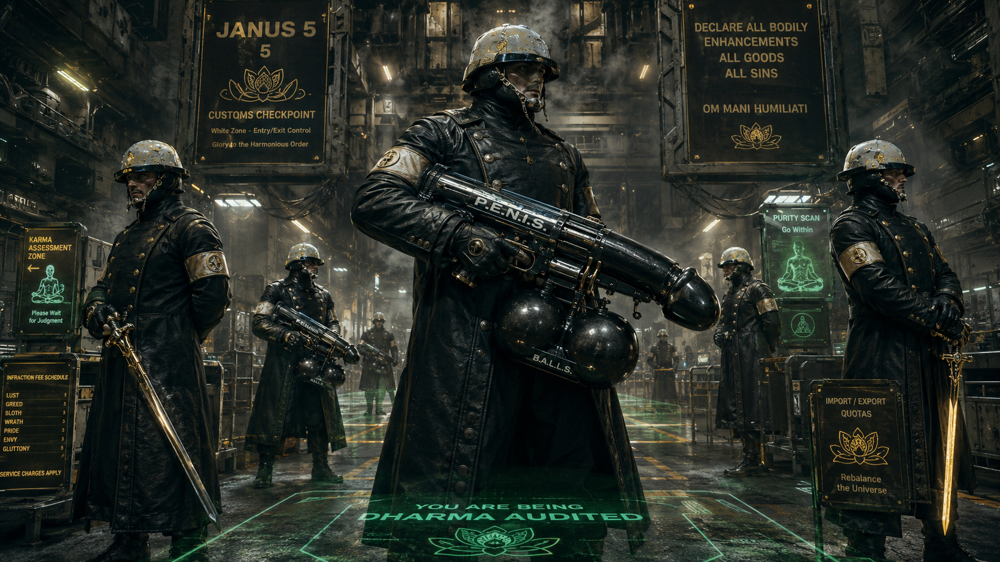
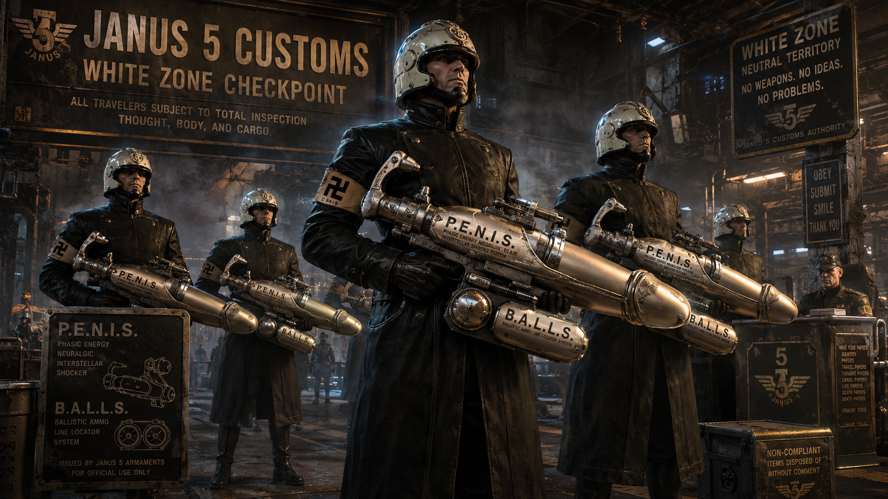
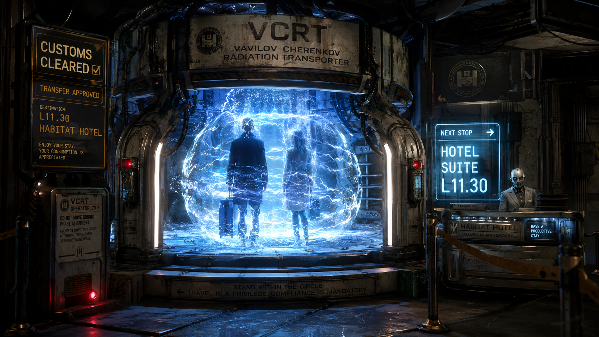
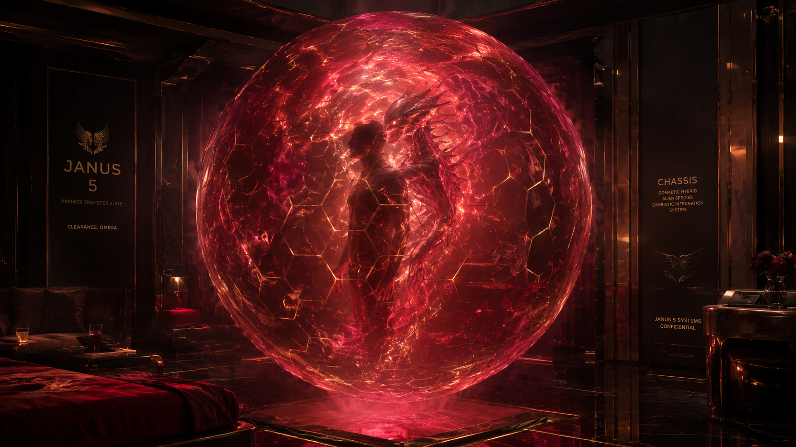
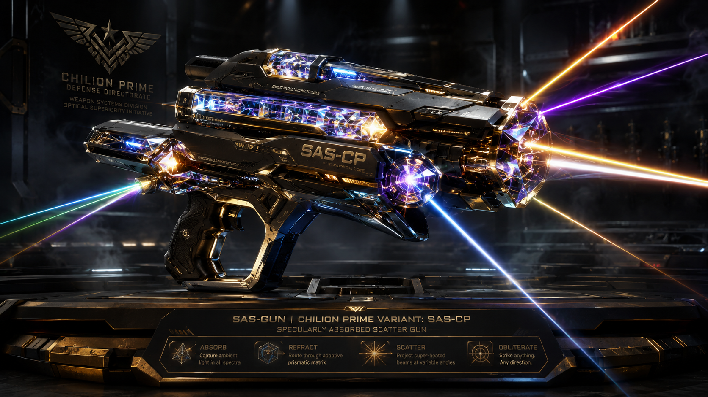

JANUS 5, Episode I: Balls, Bureaucracy & Blasters
A Sci-Fi Satire Serial
From the arse-end of the galaxy to the tip of interstellar madness, this isn’t war, this is SHAG.
Prologue
Janus 5
Janus 5 - Stardate - 191.020.18
A dead-end solar system, in a cul-de-sac galaxy, the shit stained arsehole of the universe leading fucking nowhere!
The furuncle of the known universe, in fact, the furuncle of any universe or multiverse that’s been dreamt up in any imagination, once and for all time by anyone who has ever existed past present or future.
Janus 5 inhabitants are the most grotesque backstabbing anti-good Samaritans that Jesus Christ would have ever had the displeasure of knowing, then having to die for.
Maybe he should just say the word which will kick-start Janus 5 into Armageddon. I ain’t talking about some Hollywood soy boy’s wet dream of despair or hope, after which everyone ends up living happily ever after!
I’m talking about the type of conflagration that destroys so effectively that no matter how many different writers try and conjure up a sequel or pre-prequel that any idea of any reboot can just fuck right off!
Anyway, their pens will be about as much use to them as a man with a limp dick in his hand, who is offered up Salome’s dripping hot wet throbbing pussy on a silver platter with no questions asked, may as well just cut off his own head.
It makes no difference whatsoever if the director or writers first name is John, or even if he tries to go rogue or rock a Rambo.
It’s never going to happen in any universe or multiverse, not even at the end of the last verse of this verse.
Because the total destruction of Janus 5 has been written out of existence with such certainty that like a self-replicating virus that has the tenacity of a terminator, Janus 5 will be completely annihilated every time that it dares to try and show up again on any universes arse.
The boil that is Janus 5 has been lanced once and for all and forever!
Do you hear me you stinking money grabbing cocksukers?
Phew well, that covers that I hope!
Arrival
Janus 5 Arrival
For why and for whatever reason any type of alien entity of any form or formless form would want to be there shall remain a mystery that no being in any universe anywhere can be arsed to try and fathom.
When arriving on Janus 5 all aliens must pass through the white zone, (Frank Zappa anyone) making sure to have fully dispensed with all and any luggage.
One is immediately confronted with the eye-melting spectacle that is the Hunchback Anti-Gravity Sisters (HAGS).
HAGS

They have arms and legs like limp boiled spindly sticks of spaghetti with three tiny like circularly shaped suckers attached. And both their arms and legs can be used for exactly the same purpose. Fuck all!
The hags are so densely packed that it’s possible each hag may weigh about as much or even more than a teaspoon full of singularities.
Their head is pure unadulterated Vantablack, their eyes constantly change colour across all known and unknown spectrums of light. Pulsing and flashing like annoying Christmas tree lights.
They have to wear an outfit reminiscent of the one worn by the Baron Vladimir Harkonnen. As it helps them to levitate and float about considering their mass.
It is rumoured that underneath the hag’s anti-gravity suit that they have a penchant for wearing the skin of any greenhorn intergalactic adventurer dumb enough to trust anyone of the hags for even the smallest part of a Planck second.
When the Hags murder a victim it is as swift and as random as any murder committed by Patrick Bateman.
After every kill the hag’s fashion their undergarment like a great artist. I suppose something akin to Michelangelo.
The hags take great care to weave and fashion their fleshy undergarment into a silky kind of transparent web.
I guess the hag’s idea of art is certainly nothing like the Adamic creation, created with the artistic genius of Michelangelo, while lying on his back, flash cunt.
If they have any type of discernible mouth then the only way one can guess as to its location on that blackhead of lightless light is given a clue because they have a deluge of some stinking gaseous like fluid of ammonia constantly pouring out from it.
Like the Aliens from all the Alien movies combined whose mouths orgasmed more heavily with each new film and for no fucking reason at all.
I tell you not even Noah’s Arks would be safe.
Instantly the Hags inhale and reabsorb the gaseous like fluid of ammonia directly through their skin pores, if they have any that is.
I guess this may have something to do with producing glucose or energy for the Hags.
Blood Sugar

One of the benefits the Hags derive from this constant flow of ammonia is that they secretly produce a highly addictive drug called (Blood Sugar or CH61206) as it is chemically known to human beings.
All that is required for the Hags to produce this drug is a smidgen of photosynthesis, water, carbon dioxide and sunlight energy. And their own added personal secret formula or recipe.
Even I am not sure what the added secret formula consists of and I’m the writer, that’s how much of a secret it is to the Hags.
Blood sugar is obviously red in colour and has a sweet taste to it, at least that’s the way it ends up when the Hags have finished making their product.
As the Hags can see all spectrums of light known and unknown they are able to manipulate the drug so that it can reflect any colour across all light spectrums. And can even appear to be multi-coloured or monochromatic.
The Hags have an intuitive understanding of what humans know as Rayleigh scattering.
This is just one of the potential psychological advantages the Hags employ so as to be able to manipulate any alien species on different levels into trading with them.
An alien would apparently see the drug in their favourite colour or colours.
Additionally, the Hags have manufactured (Blood Sugar) to taste and smell appealing to any potential customer.
I imagine the Hags accomplish this through a process of light refraction and chemical manipulation.
This amazing piece of chemical engineering poses quite the conundrum for drug enforcement agencies because it makes it very difficult for them to determine with any accuracy what it is they are looking for.
PILL

However, it is rumoured that the science departments across all intergalactic drug enforcement agencies are working together to try and produce a photosynthetic illuminating light laser, ironically known as the (PILL).
Unfortunately, this is at high cost and for some, the cost alone makes the idea of producing and manufacturing the (PILL) a hard one to swallow.
The design concept of the (PILL) resembles a small antibiotic shaped capsule that can be held by the thumb and index finger, it is small lightweight and half coloured red and white.
In addition, the (PILL) is able to analyse and quickly determine the chemical compound of many substances.
Furthermore, the (PILL) is able to take precise measurements and it can also determine the effect a substance may have on the cell function and metabolism of the majority of alien species.
Near the thumb are a small keypad that has been designed to aid the user in analysing light and chemical compounds and their structures, in this case primarily glucose being part of a group of carbohydrates or simple sugars.
When a scan is initially started the (PILL) will prompt the user to punch in a certain formula that corresponds with its first basic finding.
E.g. for glucose, C6 H12 O6. After the user punches in the correct formula the (PILL) then takes an intricate measurement on a molecular level, and makes a determination as to whether any other foreign or artificial bodies are present.
The (PILL) is also able to scan across a large spectrum of electromagnetic waves, including gamma rays, infra-red, X-rays, microwaves, terahertz waves, radio waves, light waves, ultraviolet, etc.
And this is why it is proving very costly to the intergalactic drug enforcement agencies science departments, and why some want the whole idea to be dismissed permanently.
There are those behind the scenes that want this to be accomplished as quickly as possible.
These are the real powers that be and they have no intention of stopping the flow of (Blood Sugar), because they are busy working out how to corner the market for themselves.
They are pouring resources into the research and manufacture of the (PILL), why? Well, because they have realised that the profits and the return that they will reap on this very expensive endeavour will be astronomical.
They also realise that with greater and greater wealth comes more and more influence and power, this is their holy trinity. Or they're (WIP).
Customs
OK first to arrive at the intergalactic customs desk is Mr and Mrs Samson, Adam, Matthew, Mark, Luke, John, Peter, Paul, and his wife, Delilah, Eve, Lilith, Jezebel, Salome, Phylistine.
They have to go through the whole terrifying ordeal of stating what their reasons are for visiting Janus 5, is it business or pleasure?
One absolute truth truly exists within the material universe and it is this, that not even an Almighty creator would visit such a floating turd of a planet in space for pleasure.
To demonstrate this Graham has kindly, quickly, and roughly on the back of an extra-large Rizal paper put together some theoretical maths for us to truly appreciate the dilemma.
He postulates through advanced calculation that the chances of any kind of omnipotent, omnipresent, omniscient, creator (The three big OOO’s, I said O’s not Ho’s, that’s a private story), existing at all anywhere at any point in time, and in any dimension ever, visiting Janus 5 are 3^^^^3.
He was stoned at the time so he may be off by just a tad. OK, Infinite shout outs go out to Graham at this point.
Metaphorically speaking Janus 5 is the curry stain in one’s underpants that the anus accidentally vomits out after one has had far too many beers and a scorching hot Vindaloo.
Leaving behind that old Johnny Cash tune to hum and vibrate against one’s sphincter. That being ring of fire.
Where were we? Oh yes back to Samson and Delilah!
When Mr and Mrs Samson and wife Delilah Phylistine stop directly at the intergalactic customs desk, one of the hags' hovering slightly off the ground asks both Sam and Jez, anything to declare?
The hag’s voice is a coalescent oil slick of tones that resemble Regan McNeil who when possessed shouts out to father Damien Karras your mother sucks cocks in hell.
And interlaced with the dark, rich and cool as fuck chocolaty voice tones of Spawn.
The hag quickly follows her first question anything to declare, with a second question, is it business or pleasure?
I guess you’ll have to speak to the Almighty if you want to be enlightened and find out the truth about those questions.
And here’s hoping he’ll answer you; if he does tell no one because they will lock you the fuck up.
Nobody apparently is allowed to have had a direct answer from Almighty God without being slipped like an erect penis into a Johnny, a.k.a, the straight jacket.
It has to be that no one has ever seen him and so how for the love of Satan or Charles Darwin can we let one get away with that kind of monkey business, that’s pure Vulcan logic.
You would be led away kicking and screaming and thrown headlong into a padded white room where incessantly the track White Room by the British band Cream is playing.
You’re then told by some weird looking motherfucker with an east end accent although possibly being an alien and having spent far too much time in the east end on Earth, obviously, that you’ll be alwhite. Then he fucks off back to his mental health market stall.
Sam is still considering the hags questions thankfully. That’s great because it offers me a convenient segue back to the point when Sam and Jez arrived at the intergalactic customs desk a few paragraphs earlier.
OK, Sam you ready to answer that question now?
Fuck sake can you just get on with it! OK, Sam, I am I am calm down.
With all the decorum and grace of a real gentleman, Sam mockingly repeats the hag’s questions to himself in an undertone. And then says to the hag well it ain’t for fucking pleasure that’s sure as shit.
Sam with his right hand confidently sweeps back his long black silky obsidian locks of hair over his right shoulder and with the skill of a professional fisherman casting his line.
The wafting back of his hair causes a honey scented zephyr to sail through the air which permeates the whole room with its sweet odour.
The hag glares at Sam and thinks to herself you’ll regret speaking to me like that you muscle bound honey scoffing poncey cunt.
Show me your Holo Wristwatch containing your intergalactic travel permit growls the hag.
Samson then rolls up the sleeve of his carbon nanotube silken shirt revealing his dermal nanotech arm A.K.A. (DNA).
Through the epidermis of his left forearm lies the translucent face of a watch, colloquially known on Janus 5 as a Holo Wristwatch
Sam gives the command, search intergalactic travel permit, and with the flash of a bolt of lightning an amber three-dimensional image silently screeches up from his wrist and halts at about four inches in mid-air and displays all relevant documentation written in a verdant translucent font.
The hag says everything appears to be in order then she says if you are ready you can be transported over to your hotel room instantaneously.
All the while she drools holding a mischievous glint in her eye; she is still extremely angry because of the way Sam had spoken to her earlier about Janus 5. Incessantly, secretly in her head she is ruminating and thinking about how she may hatch a plan for some payback
As Sam and Jez were just about to transport over to their hotel room Sam hesitates and Jez asks what’s up honey.
Sam realising the huge amount of security throughout the customs depot enquires asking the hag what’s with all the security.
The hag says oh yes there are quite a number of planets at war presently and it’s all to do with some highly addictive spice that everyone is raving about. Silly cunts she whispers to herself.
Oh yes before I forget what month is it classed as being here on Janus 5 asks Sam, and the hag says June.
Sam thought to himself June, war, spice, that rings a bell for some reason.
Security

Samson asks his wife Delilah have you got any question for the customs officer Sweetheart, and impatiently D replies no I fucking haven’t.
So, can we please get to our hotel room as I am gagging for a steamy hot wet fuck, and you know I can’t be bothered with all of this mind-numbing shit?
Delilah says a woman of my intelligence craves a wide variety of exciting and different types of stimulation?
OK, OK, darling says Sam. D says look let’s get out of here and remember I am the brains you are the brawn.
Delilah says, Sam looks like you need a haircut, and Sam replies, not after what happened the last fucking time.
At each point of entry and exit, there are heavily armed guards posted, each of the armed guards is dressed in black, wearing a long black coat somewhat like a long riding coat.
These long black coats conceal the different types of weaponry that the guard’s posses and which they use in order to adapt to the fluidity of violent conflict if they ever come face to face with that grim reality.
Inside the coat is a long sabre with a pure silver hilt hand grip and a long golden blade?
All across Janus 5, the Sabre is humorously named by the military, police and security guards as the (Strategic Arsehole Bludgeoning Rectification Emperor).
The blade is as sharp as an eagle’s eye and has a bite just as deadly as the Inland Taipan if not even more so.
The sabre is capable of releasing neurotoxins into the nervous tissue that then, in turn, affect the nervous system causing temporary paralysis or even death.
If death does occur it is usually because the blood has become coagulated and the lack of oxygen to the brain causes death, especially for a human.
Whatever type of life-sustaining gas emanates within the life forms cell structure, of an alien world in the known universe has been thoroughly studied and catalogued by Janus 5 scientists.
The reason for this is so that the use of any of the toxins manufactured by Janus 5 scientists, and their conglomerate of pharmaceutical companies, can at any point in time, anywhere on any planet, alien or otherwise, simply and easily mass produce any of the toxins that they wish to take advantage of.
Because God forbid that an alien species try something nasty or violent and that’s why the Janus 5 government has the whole of the toxin market held tightly in their unbreakable iron grip.
This also gives a great beneficial confidence boost to the Janus 5 military, police, and security guards, as it helps them all to feel a needed sense of tough empowerment in their abilities.
Having these potentially deadly tools at their disposal makes it highly unlikely that they will be taken by surprise by some wannabe Dick Turpin.
Each of these separate forces is just one more vibrissae on the ever-expanding tentacles of the Janus 5 government.
All security forces undergo an in-depth study of all known alien species and their genetic structure.
This has been done to counteract any error in judgement when using any one of the toxins, as some of the alien species may resemble one another at least cosmetically on the surface.
The toxin could potentially cause serious harm or even death. Nonetheless, the chances of death are minuscule by design.
At any rate, all of the toxins have undergone thorough research and strenuous testing with the intent of preventing serious injury or even death by the administration of any one of the toxins into the unintended alien species, hopefully.
If one of the toxins were accidentally used on the wrong alien species it is automatically neutralised as soon as it interacts with the nervous tissue.
This enables all types of security forces to know when and where and why it is appropriate to use different types of lethal and non-lethal force.
The settings for the sabre are selected and can be easily adjusted with a simple thought as each weapon is directly linked into the guard’s brain waves for convenience.
This also means that no one else could alter the settings at all and so the sabre would be reduced down to hack and slash attacks only.
I guess some aliens probably don't have hands, hands that would not be recognisable as hands from a human point of view.
Plus, no other species of any alien can have their brain waves attuned to the sabre anyway, not unless they were to undergo serious interspecies genetic modification.
It seriously helps to have one’s brain waves acutely attuned in this way to their own personal weaponry, because in extremely dangerous situations it saves time in having to carry out the physical action of altering the setting while in combat.
And any time dilation between thought and action could mean the difference between life and death for the user.
This may even be more apparent on different planets where the gravitational forces may slow down one’s physical actions and reactions because that individual may not be accustomed to the effects of the gravitational force/s.
These weaponry security measures seriously reduce the chances of any serious mass murder rampage, perhaps being considered by some type of alien incel or earth like cousinly equivalent.
There is also the possibility that an opportunistic psychopath may be having a worse than usual day and just goes completely fucking apeshit and begins swatting a potpourri of alien life forms left right and centre.
Could it get any worse than that scenario, certainly? Let me enlighten you, dear reader. Consider this.
It could be some sort of well-oiled and trained religious terrorist with an ideology and belief system as dark as any intergalactic dark age.
Who has been isolated by choice and has hidden away in some weird veiled society for millennia or more.
Then after coming out of a cave full of shadowy silhouettes can't handle another reality and boom! Cracks then starts killing the fuck out of everything in sight.
Just think if it the terrorist just happened to be an octopod and had stolen eight of those sabres can you imagine the body count, holy fuck!
At least if one is out in the open and you saw that monstrosity sprinting towards you at least you might be able to escape.
Here’s a horrific vision for you to consider.
You are face to face with that rabid octopod in the octagon; now what do you do? Fuck all, you’d be fucked and most likely unable to escape.
Your head would be detached from your body in the blink of an eye, well depending on where your head might be located if you are not human.
Imagine, the perpetrator could be travelling the planet lopping off heads all over the occy.
Does it get any worse? Think about it.
Have you guessed yet?
Well, of course, it does you dumb cunt!
And what kind of story would this be if it didn’t?
Fucking shite that’s what!
Anyway, here comes the most sickening of sketches.
Sickening because of the type of fat yellow, slippery, slug-like pretentious weirdo’s that pretend to serve you.
Even more spasticated is that you may have been party to putting them where they are now.
So, some of this mayhem could be your fault you inconsiderate spunk sponge.
Cynically your planetary government would use these acts of terrorism surreptitiously to strip away your freedoms under the guise of planetary security.
It is a well-known intergalactic fact that any and all politicians truly have one and all species of alien’s best interest at heart.
If just one leader fails in their heartfelt duty just once in trying to protect anyone of any alien being, of any form or formless form, be it, child or woman, fuck the men though, just saying.
Your poor leaders and their comrades will all collectively be unable to sleep at night, and they may become one huge blubbering and caterwauling flock so overwhelmingly depressed that they all commit mass suicide in protest. God forbid.
Incidentally engraved in a three-dimensional Janus font across the sabre's blade is the words, time is our lifeblood.
P.E.N.I.S. / B.A.L.L.S.

The biggest and most apparent weapon that they have is the Phasic, Energy, Neuralgic, Interstellar, Shocker, (PENIS) for short.
Attached just below the penis is the ballistic ammo line locator system or (BALLS).
The job of the balls is to make sure that all the various types of ammunition are fed into the penis quickly and efficiently especially if the penis has to shoot multiple loads.
All military personnel, police officers and security guards have been advised that they must be at all times cocked, locked and ready to rock.
They have also been commanded to keep both their penis and balls in full working order at all times.
In addition to this, they have been ordered that they must keep both their penis and balls clean and spotless period.
Any officer found to be flaccid in carrying out his duty will be court-martialled with extreme prejudice and will have both his penis and balls removed from his person and they shall remain confiscated indefinitely.
Their motto is, keep your penis and balls to hand always!
Although this looks impressive the guards don’t very often get much of a chance to shoot. However, they are especially attached to their penis and grip it firmly at all times, for security reasons of course.
The penis is capable of blasting out large quantities of hot viscous fluid that can pin and stick any assailant to any surface.
Whoa, betide anyone that gets hit in the face or eyes as in the aftermath of a large penis blast it can take quite a while to clean it all away completely.
Across the right and left biceps is a band that encircles all the way around covering the triceps also.
The band is the Buddhist Swastika and this is worn because on Janus 5 the police forces and military forces are given extensive spiritual guidance and training.
They are also immersed in intensive martial arts training with techniques adapted from planets all throughout the known universe.
In small letters and symbols is the written code D 6 4-9 just neatly embedded into the armband just below the Swastika itself.
This is done with the intention of teaching all new recruits the philosophy behind and involved in the many different martial fields or war and peace, honour and reverence.
And to inculcate into their minds and hearts the sanctity of all life, so that if they do have to use lethal and deadly force that is life threatening it is used only if absolutely necessary.
Unfortunately, there will always be the pleasant fuckwit psychopath that slips through the intensive vetting programme with the sole intention of fragging a few hapless and helpless innocent beings and keeping score in graphic detail about how their victims head exploded apart like a watermelon.
These psychopathic infiltrators though small in number gather together in secret to wank each other off and replay their latest frags in slow motion for extra orgasmic delight.
Once discovered and caught they are swiftly taken to the local disintegration centre and reduced down to a fine powder which is then mixed together with other toxic chemicals and transforms the powder into useful weed killer.
These types of weed killer are quite rare and very expensive and fetch a pretty penny on the intergalactic market.
This is because it is believed although not scientifically proven that this weed killer is a merciless monster, and there are those that claim this is because the weed killer retains the psychopathic essence of the psychopath.
It’s more likely that this is some bullshit story invented to maximise profit simply to benefit some fat fucking greasy business aliens and businessmen.
Who regularly congregate together and love nothing better than to suck on huge brown cigars which resemble massive black cocks.
While bragging about how they have brought many an economy crashing to its knees while stealing more and more resources and wealth for themselves. Fat greasy fucks cock sucking pieces of shit.
On their head, the guards have a half moon shaped helmet made from an ultra-thick coating of titanium alloy to protect the golden bowl known on Janus 5 as the brain.
These helmets are kept locked securely away in individual lockers with the rest of the uniforms in an enormous armaments room.
The armaments room has a fantastic door made from a transparent diamond flex glass that is fused with oscillating deadly security beams. They are amber and green translucent fonts appearing within the glass in three-dimensional form and displaying the marking E126.
The helmet has been coloured cream with a half inch thick black peak and a silver v-shaped cord with a long strap dangling off of the bottom of the V-shaped part of the strap.
At each side of the V-shape part of the strap are two double capped rivets made from solid titanium and embedded into the helmet.
These hold securely into place the strap that hangs down from the right side of the head near the right ear which when fastened into place are held there so acutely that one would have to be infinitely stronger than Hercules to even consider prying them apart.
On top of that, the doubled capped rivets have the added advantage of being protected with an intense electromagnetic shield. This shield flows throughout and across the helmet with a blue and gold shimmer that appears to undulate.
The strap travels down and goes underneath the chin and up to the left-hand side of the head near the left ear and is then pressed into place exactly as the right side is designed to be held into place also.
VCRT

Right now that we have gotten that entire load of bollocks out of the way, let's get Samson and Delilah to their hotel room, shall we?
Yes, I know she is still waiting for some hot hard throbbing cock from old Sammy boy.
D and Sam motion to the hag that they are now ready to be transported over to their hotel suite.
The hag acknowledges their signal and instructs them both to move across to the Vavilov–Cherenkov radiation transporter (VCRT).
Sam and D step onto the VCRT, as they do a filmy crystalline fluidic force field that shimmers with blue luminescent incandescence encapsulates them both, sheathing the two of them comfortably together in a warm sun-kissed eiderdown of light.
Quicker than one can plug in ten full spectrum bulbs, spelt in binary (10), they are both hits with a phase wave and are disintegrated and reassembled back together just outside of their hotel room door numbered, L11.30.
For increased security, it is mandatory that when a couple travel together on Janus 5 that the male has to provide both retinal scan and semen sample to enter the room.
Whether the Janians have done this for a laugh I cannot say, what I do know is that a crook looking for an easy steal is going to have to go through the process somehow of obtaining the retinal scan, and then on top of that would have to be in the hotel hallway tossing off the victim.
Perhaps this is a genuine stroke of genius incorporated into Janus 5 law to protect the citizens and alien visitors from crime.
Be that as it may, it is more likely I guess that the Janians government made this law just to fuck with anyone they can because they are twisted sick shitsticks.
And as we all or fully aware, it is a universal fact that the majority of politician’s alien or otherwise are perverted, voyeuristic, and love nothing better than to fiddle with a fresh crop of newly kidnapped kids.
All the while perusing their favourite pizza menu and trading and swapping handkerchiefs and drooling over their choice of cheese toppings.
If you want to get pedantic about the VCRT being the clever fucktard that you are and inquire as to how the VCRT is probable or works.
My answer is simple I have no fucking idea I am just making this up.
So, if you want reality then fuck off and do it somewhere else like in a physics classroom or quantum mechanics classroom.
Or maybe while you and your geek friends are mentally copulating and skull fucking each other’s brains out with your condescending arrogance, you can simply eat my shit. And get that fucking poncey ponytail out of my face.
Meanwhile, Sam has just had his retina read and is still frantically wanking away in the hallway, suddenly with an orgasmic scream of delight and relief, blows his load into the three-dimensional virtual mouth that has appeared just below his ball sack.
Sam’s semen is greedily gulped down by the three-dimensional virtual orifice and then a DNA analysis is instantly carried out. A computerised voice says user recognised, good day please come again.
Hotel Suite
As Samson and Delilah enter the room there is a hotel cleaner in the room tidying and straightening the room up for their stay.
He steps forward and D says hello and notices that his identification holo card on his lapel has his initials, G.F. Man, he is tall slim with reddish hair and beard.
His uniform is yellowy orange and black, he is wearing black thick framed holographic glasses.
In turn, he says hello to Delilah and Sam, and enquires off them, have you seen my friend he like me is also a cleaner.
His name is Gary Man; on his holo card lapel, it reads G.Man.
He is instantly recognisable because the boring bastard is always dressed in a uniform that is mainly black and grey.
Another thing, for some unknown fucking reason the pompous cunt is always carrying a briefcase around with him, even on his intergalactic travels.
When the rest of us get together when G. Man is not around, we all have a right belly laugh about it.
We call ourselves for fun the resistance; this is because G. Man as we affectionately call him is always trying to talk us into carrying around a briefcase too.
He says that by doing so it increases one status even though we are cleaners.
The resistance does not care about how we look, we just party get wasted and fuck!
I ask you would you carry around a briefcase everywhere you went just because you may feel a little insecure about your station in life. Fuck that!
Maybe in some other universe, the G. Man is some mysterious person or governmental stooge, and he carries around a briefcase everywhere he goes.
Samson and Delilah glance quickly at one another and share a quick vanishing almost indiscernible grin.
However, G.F. Man is acutely attuned to micro expressions as it is compulsory that to be hired as a cleaner on Janus 5, one must undergo and intensively study micro facial expressions and learn how to read body language.
Yes, your right I am bullshitting you. One has to have a laugh while writing for fuck sake.
Ok says the cleaner have a great stay, oh yes and sir just a little tip for you wank into a receptacle and that way you can just tip some jizz juice (JJ) into the virtual orifice when you need to get back in.
Anyhow must dash I have a train to catch.
Pardon me says G.F. Man could you do me a small favour if you happen to come across G. Man tell him I have already caught the train to our next destination.
Cheerio he shouts disappearing down into the shadowy dimly lit hallway, leaving behind a gravity-defying faint cheerio that's left hanging in the air, like someone dangling off of the edge of a cliff holding on for dear life.
⚠️ Adult Content Warning — 18+
This section contains explicit sexual content intended for adults only.
Click to expand explicit content
As the atom eight large aegis suite doors have closed silently behind him, Delilah says Sam great let's fuck, a girl has to unwind after a tedious day you know.
Now Sam, say’s Delilah it’s time for you to get that obese blood-filled hot vein ridden titan cock of yours inside me.
It’s just quite heavenly how my dripping wet cockpit tightens around your molten meat poker and honey oh how you can poke her.
Sam and D like a pair of frenzied rapists literally begin tearing one another’s clothes off, buttons fly across the room ricocheting everywhere almost as if the room were a pinball machine.
Delilah frothing at the mouth like a Doberman pinscher and resembling a savage Judo champion fighter throws Samson Ippon seoi nage style over her shoulder, this sends him whizzing like a Catherine wheel through the air hitting squarely the bulls-eye, which is their giant fuck cushion, and D declares I am going to break you, bitch!
Delilah sprints toward Samson who is now laid spread-eagled on the bed with his sky-scraping cock awaiting happily the coming tsunami.
Delilah a skilled gymnast moves swiftly and does a couple of back flips and lands perfectly onto Samson's meat mallet.
Delilah says how many marks out of ten for that honey and Samson replies you know it’s a perfect ten baby, every time, every time, every fucking time.
D begins riding Sam because now his cock is her own personal Shinkansen, aka love train and for Delilah, there is no stopping this love train.
After some time, Sam grabs D with one hand around her throat and the other hand grabs the back of her head gripping tightly her hair.
With the skill of a veteran jujutsu Master, Sam flips Delilah over like a pancake onto her back.
Sam pins her legs all the way back passed her ears so that her toes are now touching the mattress.
He then cups each hand under D’s arse cheeks and with his thumbs pulls apart her buttocks, revealing her tight pink pouting anus lips.
D squeals with glass shattering delight as Sam attacks her arsehole with his tongue whipping it in and out like a frenzied viper.
After about five minutes of this and Delilah squirting several times all over Sam's face; D says to Sam you wanna go to shit-city it's your’s baby it's yours.
Sam spits heavily onto his cock spreading the lube around and bam he is in, literally fucking the arse off her.
Sam like Willie Wonka loves his chocolate factory. And while Sam is tearing Delilah a new one, D is sucking her large ripe nipples that rest atop her huge fat firm double EE-cup breasts.
Delilah calls out to Sam, Sam it's time for the much-loved sixty-nine.
Ok baby, Sam says.
Sam like an elegant twirling ribbon spins over onto his back, being very careful not to land on his hard-on.
Delilah moves slowly into position sliding her succulent pink blancmange canyon, hot and dripping wet over Sam’s face, while deliberately allowing her massive silken firm tits to tease their way across Sam’s muscular sinuous body.
Both are now locked into position, so let’s let the sucking and licking being shall we.
Delilah slowly licks Sam's hard penis while teasing the head with her juicy lips, as Delilah beings to slowly suck the cock she pulls Sam's foreskin back as tightly as possible so that the sensation is greatly increased for Sam.
D also very slowly and then quickly alternates her hand motion twisting it up and down the massive phallus, all the while applying greater suction to Sam’s anal impaler.
Meanwhile, Sam is helping Delilah's squeezebox to knock out some toons. And it goes something like this slurp, slurp, slurppy, slurppy, slurp, slurp.
From the minge comes a tinge of some nineteen sixties pop song. All the while Sammy boy loves his honey pot binge.
For D’s added pleasure and just for good measure, Sam slips his index and middle finger into Delilah’s molten lava cherry pie, and he takes turns licking and fingering her arsehole and quim.
D and Sam are both moaning and groaning in ecstasy when suddenly Delilah screams out like a banshee as her cunt curtains quiver and then it’s Niagara Falls.
Sam’s face is hit with D’s red-hot flash flood, and like a man lost in the desert without water he greedily gulps down Delilah’s silver pearly love juice.
This makes Sam’s cock extra hard and D feels it swell, she knows he is about to ejaculate and with that, her head beings jackhammering down deep on his love truncheon past her tonsils.
With that Sam screams out like the incredible hulk as he floods D’s mouth with his thick hot icing and as it beings to ooze from D’s mouth she goes to town letting none go to waste.
Afterwards, they both lay back on the bed happily smiling at one another because now they both feel completely loved.
Now that Samson and Delilah have expressed their own unique physical form of love each one for the other, they now both feel complete unity in that love.
Through this love, they learn more and more of what it truly is to appreciate the different forms that make them who and what they are. And the more they understand that the stronger and closer their bond.
On the surface, it seems wanton but Samson and Delilah are not fooled as they know deep in their hearts that this bond is both physical and spiritual.
This holds them both together like barnacles on a ship’s hull by the super glue that is their love.
Puffing and panting they are both lost together in the serenity of a perfect silence a silence only two true lovers know?
They have now truly become one flesh and as they lay side by side, they are perfectly happy complimenting one another on their beauty as they kiss and caress in unabashed naked bliss.
Sam and D’s motto: work hard, play hard, fuck hard!
Truly love, respect and honour one another.
Captain Proton
As Samson and Delilah are relaxing together a call comes in from Chilion Prime on both Sam and D’s Holo Wristwatches, splintering the serenity they are both lost in.
A sound somewhat resembling an eagle plays out until Sam says to accept the call. Once Sam accepts the incoming transmission it automatically synchronises with D's Holo Wristwatch.
Simultaneously Sam and D are greeted with the face of Captain Proton on Chilion Prime. Immediately Sam and D both nimbly stand to attention and salute.
Captain proton says to D wow fantastic tit's D, thank you, sir, say's D, I had these tits printed back on Chilion Prime before leaving for our mission sir.
Captain Proton says too Sam holy fuck Sam that is one stunning looking beaver cleaver you have there. Sam says thanks' Cap, I also had this made up before coming here to Janus 5 for our mission.
D love’s it and she knew that I would love her big fat firm double EE cup Babylon’s, this is only the 5th time she has had them reprinted sir; I call them my Babylon fives.
Captain Proton asks is it safe to use the body modification nanotech cell restructuring cocoon.
Of course, says Delilah, all the creases with the tech have now been perfectly ironed out sir. And long gone are the days when some poor fucker would wake up and have a pleasure pump where the nose was supposed to be. Fuck knows how things like that happened sir, exclaims D.
Great says Captain Proton I will talk to my wife about it and we can get ourselves modified for some extra fun, oh agent D, or should I say double EE, laughs the Captain; Agent D would you send me the schematic of your tits so that I can get my wife a pair as those two puppies are fucking incredible.
No problem Cap says Delilah, I am sending you the blueprint now.
Delilah laughs out loud; Captain Proton asks what so funny D and Delilah says to Captain Proton, well it will be like you are sucking on my tits in a roundabout way sir.
Then Samson, Delilah and Captain Proton all burst into hysterical laughter.
Ok, now time to get serious says Captain Proton, yes Cap says both Sam and D.
I need both of you to come back to Chilion Prime secretly; no one there on Janus 5 must know that you have left.
You are gonna need to stay in your suite for a few hours while you use the cosmetic hybrid alien species symbiotic integration system (CHASSIS), and transfer back to Chilion Prime for a briefing about a secret mission.
10-4, Wilco, Captain, Say’s both Samson and Delilah, we will be there presently sir, they say as they both salute in unison.
CHASSIS

The cosmetic hybrid alien species symbiotic integration system or (CHASSIS) as it is known in the intergalactic vernacular is an advanced technology that adds another artery to space travel.
This is used for the sake of convenience usually by one bureau or another of any and all alien species within the known universe.
Additionally, it is serviced by all of the tendrils of the military, police and security forces of all alien species.
It is known by the powers that be that the technology has at times been used for nefarious purposes by criminals that have gotten their hands on the CHASSIS tech.
And the CHASSIS is used by intergalactic pimps who trade in alien species sex slavery, this enables any punter to be able to experience for the first time or multiple times sex with any and all alien species.
One is then able at their own leisure after transference has been completed fully, and the user is perfectly fused into the alien CHASSIS; whatever alien form the user wishes to possess can happily and easily engage in any number of scandalous sexual rendezvous, for as long a time or little as they wish to depending on the type of exchange agreed to acquire the temporary use of the CHASSIS.
The (CHASSIS) is made up from a red light on a wavelength interval of 700-635 Nonamoetres at a frequency interval of 430-480 Terahertz.
And once the (CHASSIS) is activated it lingers and shivers in the air like some ghostly spheroidal apparition.
It is a deep beautiful crimson of transparent translucence embroidered with hexagons, and the hexagons are coloured gold around the edges. The whole thing appears to shimmer like some kind of pearlescent oil slick.
SAS-Gun

The Specularly Absorbed Scatter Gun (SAS-Gun).
Works by the reflection and absorption and scattering of light, it has been created to produce super-heated light beams that can disintegrate, set ablaze and even liquefy most living creatures and inanimate objects.
Also, it has been designed so as to capture any light that may be scattered randomly, and it is able to funnel this light and redirect that same light toward the intended target/s on the periphery or at an oblique angle to the user’s line of sight.
This allows the (SAS-Gun) to fire multiple light beams simultaneously, simply by the touch of a button on the side of the handgrip.
There are a number of tiers that the weapon contains and can deploy, each can be used according to the severity and seriousness of any threat under any and each individual circumstance.
E.g. an assailant may be intoxicated and behaving boisterously and disturbing the peace; that person would simply be incapacitated rather than incinerated or liquefied.
This is accomplished because the (SAS-Gun) is able to have the settings quickly adjusted so that the individuals nervous system would be disrupted rendering that person unconscious.
This is the weapon of choice preferred by the military forces from Chilion Prime. It is small, easily concealed, powerful and very deadly.
It is malleable and flexible, it comes in a variety of different shapes and sizes if need be, so as to be able to be manipulated correctly by any alien species that happens to work for the Chilion Prime military.
Along the barrel is the acronym (SAS-CP).